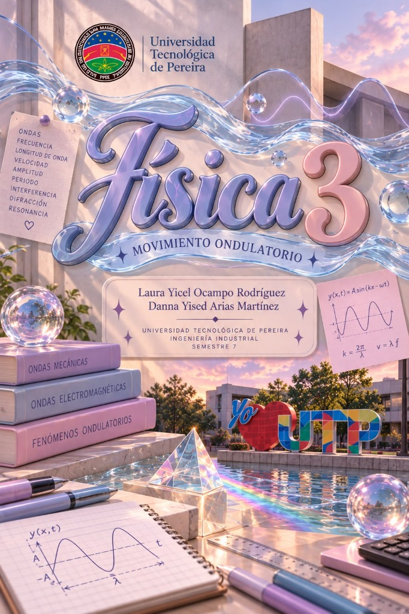

¿Qué es una Onda?
Una onda es una perturbación en el espacio y en el tiempo que transporta energía y cantidad de movimiento lineal de un punto a otro sin que exista desplazamiento permanente neto de materia.
Las partículas del medio elástico oscilan en torno a posiciones fijas de equilibrio. La fuerza de restitución elástica y la inercia del medio son las responsables de sostener el avance continuo del frente ondulatorio.
Al caer una piedra sobre agua en reposo, se engendra una perturbación local que genera ondas circulares concéntricas. Observa el corcho con banderita que flota en el estanque a una distancia fija.
Cinemática Ondulatoria
• Pulso solitario: Una sola perturbación que viaja a través del medio.
• Tren de ondas continuo: Sucesión periódica y armónica engendrada por un oscilador en Movimiento Armónico Simple (M.A.S.).
La perturbación armónica \(y(x,t)\) se repite de manera idéntica en el espacio con periodo \(\lambda\) y en el tiempo con periodo \(T\):
Cada partícula experimenta una aceleración restauradora proporcional a su desplazamiento: \(a_y = -\omega^2 y\).
Un nadador genera un pulso en el partidor (\(x=0\text{ m}\)) que viaja con rapidez constante \(v\) a lo largo de un carril olímpico de \(50\text{ m}\).
Mecánicas vs Electromagnéticas
Requieren obligatoriamente un medio material elástico (sólido, fluido o gas) dotado de inercia y elasticidad.
- Sonido y ultrasonido: Ondas de presión en gases y líquidos.
- Cuerdas tensas: Instrumentos musicales y cables de puentes.
Oscilaciones sinusoidales de campos eléctricos (\(\vec{E}\)) y magnéticos (\(\vec{B}\)) ortogonales que se autopropagan en el vacío absoluto a la velocidad de la luz:
Compara una bocina acústica y una antena de radio dentro de una campana de laboratorio hermética. Observa qué ocurre al accionar la bomba de vacío.
Transversales vs Longitudinales
La dirección de oscilación de las partículas es estrictamente perpendicular a la velocidad de propagación de la perturbación (e.g. cuerdas de guitarra, luz visible, ondas sísmicas secundarias S).
La vibración se produce en la misma dirección de avance de la onda, formando zonas alternadas de compresión y descompresión (e.g. sonido en aire, ultrasonido NDT, ondas sísmicas primarias P).
Compara el movimiento de las partículas respecto a la dirección de propagación: agitar una cuerda tensada vs la oscilación del aire frente a un altavoz.
Periodo, Frecuencia y \(\omega\)
• Periodo (\(T\)): Tiempo que tarda un ciclo completo de oscilación (segundos, \(\text{s}\)).
• Frecuencia (\(f\)): Número de ciclos completados por unidad de tiempo (\(\text{Hertz} = \text{s}^{-1}\)).
Tasa de cambio de la fase trigonométrica en radianes por segundo:
Los músicos y afinadores de orquesta utilizan un diapasón metálico calibrado a \(440\text{ Hz}\) como referencia internacional del tono \(A_4\) (La central).
Longitud (\(\lambda\)), \(k\) y Amplitud (\(A\))
\(\lambda\): Distancia espacial mínima entre dos puntos consecutivos que oscilan exactamente en fase (cresta a cresta). Unidades: metros (\(\text{m}\)) o centímetros (\(\text{cm}\)).
La amplitud \(A\) es la elongación máxima. La potencia mecánica transmitida por la onda es directamente proporcional al cuadrado de la amplitud:
En el océano, la distancia entre crestas define la longitud de onda \(\lambda\) y la altura respecto al agua en calma define la amplitud \(A\).
Velocidad de Propagación
La velocidad de fase conecta las dimensiones temporales con las espaciales:
La velocidad la determina el medio, no la fuente:
\(T_s\): Tensión [N], \(\mu = m/L\): Densidad lineal [kg/m], \(B\): Módulo de compresibilidad [Pa], \(Y\): Módulo de Young [Pa], \(\rho\): Densidad volumétrica [\(\text{kg/m}^3\)]. La rapidez responde a: \(v = \sqrt{\text{Propiedad Elástica} / \text{Propiedad Inercial}}\).
Al girar la clavija de una guitarra o piano, aumentamos la tensión \(T_s\), acelerando la velocidad de propagación transversal de la onda: \(v = \sqrt{T_s / \mu}\).
Calculadora de Parámetros
Las magnitudes que rigen la propagación armónica se interconectan mediante la identidad fundamental:
Un luthier calibra una cuerda que vibra a una frecuencia fundamental de \(f = 80\text{ Hz}\) produciendo una onda con longitud medida \(\lambda = 2.0\text{ m}\).
Función de Onda Armónica
La elongación transversal \(y(x,t)\) en cualquier punto y tiempo:
Signo \((-)\): viaje hacia la derecha (\(+x\)) • Signo \((+)\): viaje hacia la izquierda (\(-x\)).
Valores máximos: \(v_{y,\text{máx}} = \omega A\) [m/s] • \(a_{y,\text{máx}} = \omega^2 A\) [\(\text{m/s}^2\)]. La rapidez de avance de la onda (\(v\)) es constante en el medio, mientras que la velocidad de cada partícula (\(v_y\)) es un M.A.S. armónico local.
Al pulsar una nota continua en la guitarra, cada punto describe un movimiento armónico simple. Modifica los parámetros para ver la función canónica en tiempo real:
Ecuación de Onda de D'Alembert
Conecta la curvatura espacial del perfil con la aceleración temporal:
Toda función diferenciable de la forma \((x \mp vt)\) satisface la ecuación:
Un pulso solitario que viaja por una cuerda tensada mantiene su perfil rígido idéntico trasladándose a velocidad \(v\), gobernado por \(f(x - vt)\) o \(g(x + vt)\).
Energía, Potencia e Intensidad
\(\mu\): densidad lineal [kg/m], \(v\): rapidez de fase [m/s], \(\omega = 2\pi f\): frecuencia angular [rad/s], \(A\): amplitud [m]. La ley del cuadrado inverso gobierna la dilución geométrica tridimensional (\(I \propto 1/r^2\)).
\(I_0\) representa el umbral absoluto de audición humana a \(1\text{ kHz}\) (\(0\text{ dB}\)). Cada incremento de \(+10\text{ dB}\) decuplica la intensidad incidente sobre la membrana timpánica.
Bajo condiciones ideales (fuente puntual isotrópica en campo libre sin reflexiones ni absorción viscosa), la energía acústica se distribuye sobre esferas concéntricas: \(I = \frac{P}{4\pi r^2}\).
Efecto Doppler
\(v\): rapidez en aire (\(\approx 343\text{ m/s}\) a \(20^\circ\text{C}\)), \(v_o\): obs., \(v_s\): fuente.
• Numerador: \((+)\) si obs. se aproxima a fuente; \((-)\) si se aleja.
• Denominador: \((-)\) si fuente persigue a receptor; \((+)\) si se aleja.
• Velocimetría Láser Doppler (LDA): Diagnóstico de fluidos.
• Radar de velocidad: Control de tráfico y logística.
Una ambulancia de emergencia con sirena activa (\(f = 440\text{ Hz}\)) transita a \(v_s = 30\text{ m/s}\) hacia un peatón inmóvil en la acera y posteriormente lo rebasa.
Superposición e Interferencia
• Constructiva Máxima: \(\Delta\phi = 2n\pi \implies A_{\text{res}} = 2A\).
• Destructiva Total: \(\Delta\phi = (2n+1)\pi \implies A_{\text{res}} = 0\).
Dos altavoces conectados al mismo amplificador emiten un tono puro de amplitud \(A\). Dependiendo de la diferencia de fase (\(\Delta\phi\)), las ondas se refuerzan o se anulan completamente.
Ondas Estacionarias y Modos
• Nodos (\(y=0\)): \(x_n = \frac{n\lambda}{2}\) • Antinodos (\(2A\)): \(x_m = \frac{(2m+1)\lambda}{4}\). Distancia intermodal: \(\Delta x = \lambda/2\).
\(f_1 = \frac{v}{2L}\): modo fundamental. Tubos abiertos: \(f_n = n\frac{v}{2L}\); tubos cerrados: \(f_m = m\frac{v}{4L}\) (\(m = 1, 3, 5\dots\)).
Al rozar suavemente la cuerda en puntos estratégicos, los guitarristas generan armónicos naturales. Selecciona el modo para identificar visualmente sus nodos y antinodos:
Reflexión y Refracción
• Extremo Fijo: Inversión de fase de \(180^\circ\) (\(\pi\text{ rad}\)) por reacción de apoyo.
• Extremo Libre: Reflexión en fase (\(0^\circ\)) sin inversión.
• Frontera entre dos medios: \(r = \frac{v_2 - v_1}{v_2 + v_1}\). Si \(\mu_2 > \mu_1 \implies v_2 < v_1 \implies r < 0\) (pulso invertido).
La frecuencia temporal la impone el oscilador emisor y nunca se altera al refractarse.
Observa cómo se comporta una perturbación al incidir contra un extremo fijo (pared rígida), un extremo libre o al pasar a una cuerda más densa.
Difracción y Huygens
Todo punto de un frente de onda actúa como foco emisor de ondas secundarias esféricas cuyo envolvente genera el nuevo frente.
La dispersión sólo es apreciable cuando el ancho de rendija u obstáculo es del orden de la longitud de onda:
¿Por qué puedes oír con total claridad la voz de alguien situado fuera de tu línea de visión detrás de una puerta, pero es imposible ver su silueta?
| Fenómeno | Longitud de onda (\(\lambda\)) | Ancho puerta (\(a\)) | Efecto de Difracción |
|---|---|---|---|
| Voz humana | \(\approx 1.0 - 3.0\text{ m}\) | \(0.90\text{ m}\) | ¡Máxima! Dobla esquinas en abanico |
| Luz visible | \(\approx 0.0000005\text{ m}\) | \(0.90\text{ m}\) | Nula a simple vista (viaje rectilíneo) |
Resonancia Física
Ocurre cuando \(\omega_{\text{ext}} \approx \omega_0\), provocando una absorción máxima de potencia.
Diseño de amortiguadores y desacoplo de frecuencias críticas para prevenir fallas estructurales por fatiga resonante.
Un columpio tiene una frecuencia natural de oscilación \(f_0 = 0.5\text{ Hz}\) (\(T = 2\text{ s}\)). Para elevarlo a gran altura sin esfuerzo, cada empuje periódico debe coincidir exactamente con \(f_0\).
Aplicaciones en Industria 4.0
Transformada Rápida de Fourier (FFT) en acelerómetros para detectar desbalances, solturas mecánicas y desgaste de rodamientos antes de una parada crítica de planta.
Ultrasonido de alta frecuencia (\(1-10\text{ MHz}\)) para inspección volumétrica de soldaduras y medición de espesores residuales en tuberías industriales.
Un acelerómetro piezoeléctrico IoT transmite la vibración de un motor industrial de \(1800\text{ RPM}\) (\(30\text{ Hz}\)). Compara la señal normal con la señal bajo falla incipiente de rodamiento:
Ejercicios de Aplicación
Enunciado: Una perturbación armónica transversal se propaga a lo largo de una cuerda tensa con rapidez constante \(v = 300\text{ m/s}\) y una frecuencia de excitación oscilatoria \(f = 150\text{ Hz}\). Determine el valor de la longitud de onda (\(\lambda\)) en metros.
Enunciado: Un cable industrial de polímero estructural posee una densidad lineal de masa \(\mu = 0.050\text{ kg/m}\) y se somete a una fuerza de tensión axial uniforme de \(T_s = 720\text{ N}\). Calcule la velocidad de propagación de las ondas transversales (\(v\)) en m/s.
Soluciones Paso a Paso
Laboratorio Gráfico de Ondas
Quiz Conceptual
Cargando...
Modos Normales de Vibración
Reflexión y Transmisión
Simulación: Onda Viajera \(y(x,t)\)
Deducción de la Longitud (\(\lambda\))
Comparando con \(y(x,t) = A\sin\left[\frac{2\pi}{\lambda}(x - vt)\right]\):
Laboratorio virtual: Efecto Doppler
Simulación interactiva de la propagación del sonido y el cambio de frecuencia percibida debido al movimiento relativo entre la fuente sonora y el observador.
Análisis y Casos del Efecto Doppler
Con la fuente sonora en movimiento y el observador en reposo (\(v_o = 0\)):
Signo \((-)\) en denominador: fuente acercándose (\(f' > f\), compresión de frentes). Signo \((+)\): fuente alejándose (\(f' < f\), dilatación de frentes).
Parámetros patrón verificados en el simulador interactivo:
\(v = 343\text{ m/s}\)
\(v_s = 30\text{ m/s}\) (Acercándose)
\(\lambda_{\text{delante}} \approx 0.711\text{ m}\)
\(\lambda_{\text{detrás}} \approx 0.848\text{ m}\)
Número de Mach: \(\text{Ma} = v_s / v = 30 / 343 \approx 0.087\) (régimen subsónico).
• Exp. 1 (Fuente acercándose): Observa la compresión de frentes delanteros y el ascenso de frecuencia perceptible al oír el tono (\(f' > f\)).
• Exp. 2 (Fuente alejándose): Comprueba la separación entre frentes y el descenso de tono (\(f' < f\)).
• Exp. 3 (Variación de frecuencia): Modifica \(f\) a velocidad constante de \(30\text{ m/s}\) y comprueba la proporcionalidad directa de \(f'\).